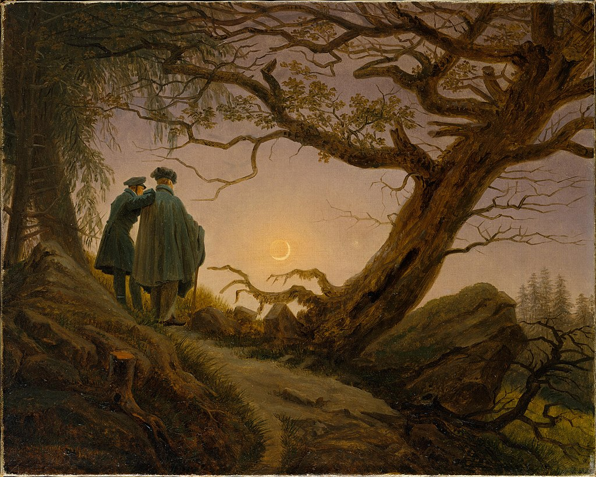

<head>
<meta charset="UTF-8" />
<meta name="keywords" content="drawing, painting" />
<meta name="description" content="drawings by Sunjy" />
<title>Sunjy</title>
<link rel="shortcut icon" type="image/x-icon" href="../../mImages/mCommon/favicon.ico" media="screen" />
<link rel="stylesheet" type="text/css" href="../../mCsses/mCommon/mCssA.css" />
<link rel="stylesheet" type="text/css" href="../../mCsses/mCommon/mCssB.css" />
<link rel="stylesheet" type="text/css" href="../../mCsses/mCommon/mCssC.css" />
<link rel="stylesheet" type="text/css" href="../../mCsses/mCommon/mCssD.css" />
<link rel="stylesheet" type="text/css" href="../../mCsses/mContent/mCssA.css" />
<link rel="stylesheet" type="text/css" href="../../mCsses/mContent/mCssB.css" />
<link rel="stylesheet" type="text/css" href="../../mCsses/mContent/mCssC.css" />
<link rel="stylesheet" type="text/css" href="../../mCsses/mContent/mCssD.css" />
</head>
<script type="text/javascript" src="../../mScripts/mContent/mContentAA.js" /></script>
<script type="text/javascript" src="../../mScripts/mContent/mContentAB.js" /></script>
<script type="text/javascript" src="../../mScripts/mContent/mContentAC.js" /></script>
<script type="text/javascript" src="../../mScripts/mContent/mContentAD.js" /></script>
<script type="text/javascript"></script> 
<script type="text/javascript">
document.write('<div class="mImgAbsolute"></div>');
/*
document.write('<p class="mFontSizeBColor" />From a white paper...</p>');
document.write('<table class="center"><tr><td>');
document.write('');
document.write('</td></tr></table>');
*/
</script>


<script type="text/javascript">
document.write('<p class="mFontSizeBColor" />Two Men Contemplating the Moon</p>');
document.write('<p class="mFontSizeSColor" />“Two Men Contemplating the Moon” by Caspar David Friedrich depicts a foreground scene of two men on a mountain path looking at the sickle of the waxing moon and the evening star.<br><br>The man on the right is wearing a green cape and beret and has a walking stick in his right hand. The man on the left is standing on the slightly higher ground.<br><br>He is leaning on his companion’s shoulder. He is slimmer, looks younger, and is wearing a green coat and cap with its strap tied under his chin.<br><br>The figures are dressed in formal garments, which also serve to signify their higher class. The moon’s night side is lit by earthshine.<br><br>The scene is framed by an uprooted oak tree on their right, whose branches reach out to those of a spruce tree on their left.<br><br>A large boulder prevents the oak from falling to the side of the mountain. Below and to the right, the tops of pine trees suggest a forest below.<br><br>The jagged branches and stark contrasts seem to create a threatening environment, but the glow of the moonlit sky lifts the mood of the painting.<br><br>The works emphasize spirituality in nature and the presence of the sublime, which are dominant themes of Friedrich.<br><br>Friedrich painted at least three versions of this scene, with one variation featuring a man and a woman.<br><br>The 1819–20 version in the Galerie Neue Meister is thought to be the original, the 1824 variant with a woman is in the Alte Nationalgalerie, and the 1830 version is in the Metropolitan Museum of Art. <br><br>Playwright Samuel Beckett, standing before “Man and Woman Contemplating the Moon,” said, “This was the source of Waiting for Godot, you know.”<br></p>');
document.write('<table class="center" /><tr><td>');
document.write('<br>The man on the right is wearing a green cape and beret and has a walking stick in his right hand. The man on the left is standing on the slightly higher ground.<br><br>He is leaning on his companion’s shoulder. He is slimmer, looks younger, and is wearing a green coat and cap with its strap tied under his chin.<br><br>The figures are dressed in formal garments, which also serve to signify their higher class. The moon’s night side is lit by earthshine.<br><br>The scene is framed by an uprooted oak tree on their right, whose branches reach out to those of a spruce tree on their left.<br><br>A large boulder prevents the oak from falling to the side of the mountain. Below and to the right, the tops of pine trees suggest a forest below.<br><br>The jagged branches and stark contrasts seem to create a threatening environment, but the glow of the moonlit sky lifts the mood of the painting.<br><br>The works emphasize spirituality in nature and the presence of the sublime, which are dominant themes of Friedrich.<br><br>Friedrich painted at least three versions of this scene, with one variation featuring a man and a woman.<br><br>The 1819–20 version in the Galerie Neue Meister is thought to be the original, the 1824 variant with a woman is in the Alte Nationalgalerie, and the 1830 version is in the Metropolitan Museum of Art. <br><br>Playwright Samuel Beckett, standing before “Man and Woman Contemplating the Moon,” said, “This was the source of Waiting for Godot, you know.”<br>" />');
document.write('</td></tr></table>');
</script>


